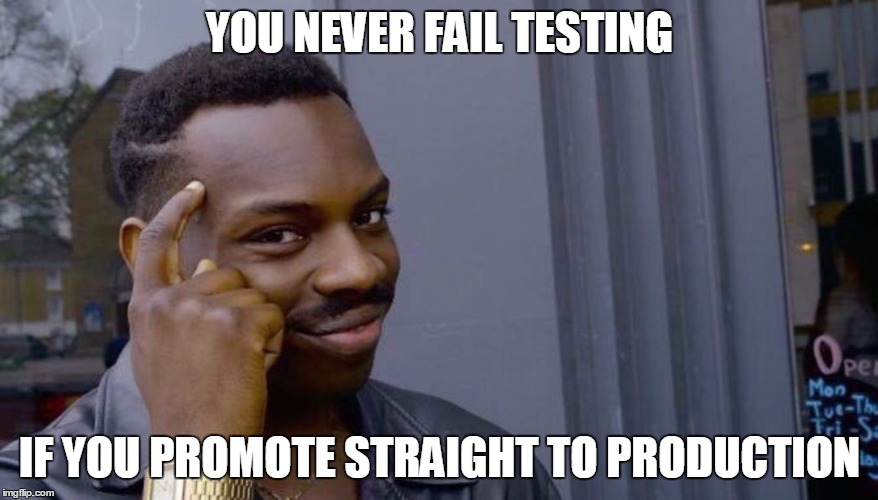

The Hidden Costs of Neglecting Testing
Programmers invariably agree: testing is a good thing. There have been studies that show that the earlier a bug is caught and repaired, the cheaper it is to fix in terms of both time and money. There are languages with testing baked in, there are testing frameworks, and even a testing movement whose apostles are borderline fanatics. Programming leaders espouse the virtues of testing and of having dedicated testers for software. Testing has never been easier, and its merits have never been so widely known.
So why do some software companies reject testing? If a product isn’t thoroughly tested – isn’t the company that released the software the one who suffers the most?
Joel Spolsky of Stack Overflow fame, covered this exact topic in 2000, in an essay titled Top Five (Wrong) Reasons You Don’t Have Testers. He wrote:
No matter how hard it is to find testers, they are still cheaper than programmers. A lot cheaper. And if you don’t hire testers, you’re going to have programmers doing testing. And if you think it’s bad when you have testers churning out, just wait till you see how expensive it is to replace that star programmer, at $100,000 a year, who got sick of being told to “spend a few weeks on testing before we release” and moved on to a more professional company. You could hire three testers for a year just to cover the recruiter’s fee on the replacement programmer.
Skimping on testers is such an outrageous false economy that I’m simply blown away that more people don’t recognize it.
What blows my mind is that its been nearly 19 years since Joel wrote those words, and most of the industry still thinks that testing is a luxury. Startups, who have the most to lose by neglecting testing – tend to put the least effort into producing a well-tested product. I’ve heard the logic: startups need to be fast and scrappy, and we’ve got to beat the other guys to the punch, and blah, blah, blah…
Here’s the bottom line: neglecting QA is shooting your company in the foot. I’m going to spend the rest of this article focusing on the hidden costs of neglecting testing.
Programmer Time is a Precious Commodity
Joel’s quote covers the idea that programmers stuck doing testing might lost their inner fire and move on. The idea of losing a programmer, especially a valuable programmer who has amassed a wealth of knowledge specific to a particular company’s software should be setting off alarm bells for managers and founders. Hiring programmers is not a cheap endeavor.
But, there is also an opportunity cost to using programmers as testers. A programmer who is testing is - by nature - not programming.
Let’s break this down into some ‘hard’ numbers. According to the Stack Overflow Devloper Survey (2018), the average programmer salary in US is somewhere between $80K-$100K depending on their job type.
CNN business claims that employees cost employers about 18%-26% of their salary as overhead (things like payroll tax, insurance, equipment and rent).
I’ll assume best case scenario, our imaginary ‘average’ programmer will make exactly $80k/year with 18% overhead costs, and takes exactly 3 weeks of vacation per year which includes all national holidays, sick days, and major life events.
So our base compensation is:80000 * 1.18 = 94000, we have 49 work weeks when vacation is subtracted and each work week is 40 hours, so 49 * 40 = 1960 business hours. This translates to an hourly rate of about94400 / 1960 = 48.16. That means for each hour a programmer spends testing, the cost to the company is ~$48.
That’s the actual cost that you can see with back of the napkin math. However, if there are bug fixes or features that would land a new customer, that aren’t being completed because programmers are stuck doing testing – we can only imagine the value that one extra programmer would bring to the table. I’ve seen million-dollar deals slip away from companies due to missed deadlines. The moral of the story is that programmers should be working on the tasks that are the highest and best use of their time, because its very expensive to misuse programmer time.
Old Bugs Die Hard
Software is an odd medium. It is more malleable than any physical structure, so most software can be released several times. This is different than say, an automobile, where a major defect could mean disaster. With software, problems can usually be fixed, and its virtually unheard of for a software company to recall a program because it explodes in certain conditions.
However, maintaining software can be costly. The IBM System Science Institute found that even in modern software, bugs found in production systems are about 6x as expensive to fix as bugs found in testing.
The reasons for these old bugs being a real pain to squash are varied, but it mostly comes down to the following:
- A bug that was just written is easier to find. The programmer who wrote it will remember most of the context surrounding the new code, hop in and modify it. Over time, programmers forget code, go on vacation, or jump to new projects. The original author of a bug may not be available to fix it, or might not remember writing it.
- Old bugs are like termites. They gnaw their way into the structure of the code they inhabit. Since all code serves as a foundation for new code, removing lines is inherently risky and great care needs to be taken to extract and replace it. Fixing bugs is often like a high-stakes game of Jenga.
A bug in the design stage can be fixed in under a minute just by striking out some text. During implementation, its just a bit longer, and requires a programmer to ask a few more pointed questions. During testing, more communication and documentation is involved, so fixes take slightly longer. By the time production code has been deployed, most programmers and testers have moved on to new tasks, and bugs in code linger – sometimes over several versions. The time it takes to find, document, replicate, debug and fix an entrenched feral bug can range anywhere from several hours to several months.
I’ve worked on a multi-month bug, and I can tell you that fixing planes in the sky is an expensive way to write software. Six programmers working at roughly 50% of their capacity took two months to implement a working bug fix. That translates to a full month of work. If we use our ‘average’ programmer calculations, that’s just under $50K, without including the opportunity cost. If that problem had been spotted and dealt with during the initial testing phase – it could have been corrected in a few days by a single programmer.
Hopefully, it is obvious that neglecting testing is a short sighted and incredibly expensive move. There are more hidden costs, but this is already a lengthy article. I’ll come back to this topic when I have more time and energy. Hopefully, its already got you thinking about improving software quality at your company.